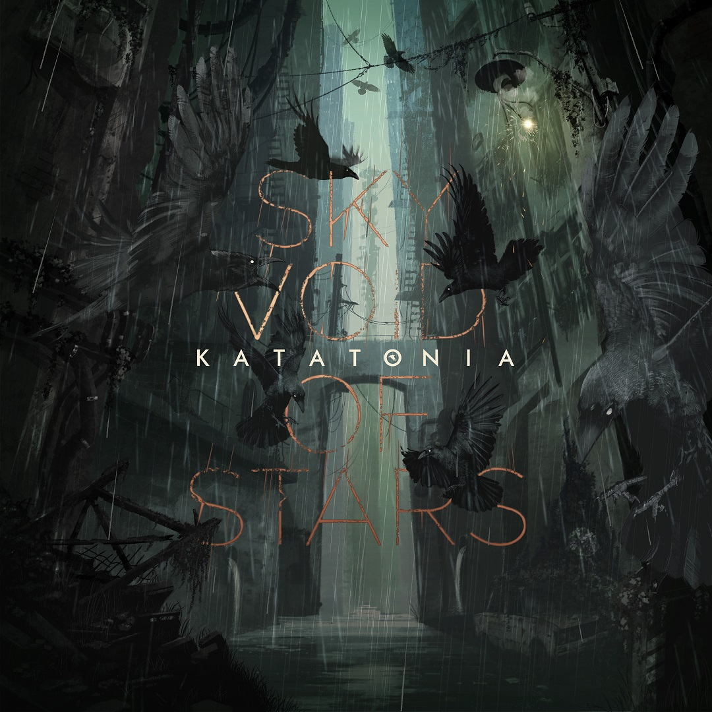

BIOGRAPHY
Carving their way from their nineties gothic-tinged doom metal
to the ethereal post-metal entity
they are today, the band led by
founding members Jonas Renkse and Anders Nyström have always
been
and will forevermore be one thing.
A vessel of deep emotion.
Shrouded
in Scandinavian despair and a universal longing for salvation.
